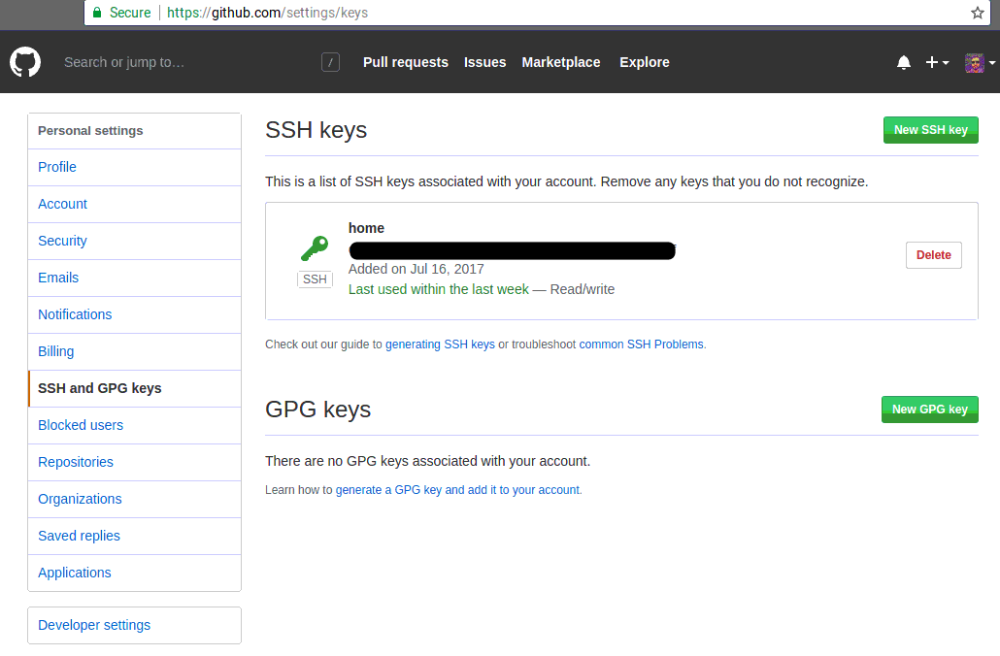

Chapter 9 Package development
9.1 Why you need to write your own package
One of the reasons you might have tried R in the first place is the abundance of packages. As I’m writing these lines (in November 2020) 16523 packages are available on CRAN (in August 2019, there were 14762, and in August 2016, when I first wrote the number of packages down for my first ebook, it was 8922 packages).
This is a staggering amount of packages and to help you look for the right ones, you can check out CRAN Task Views.
You might wonder why the heck should you write your own packages? After all, with so many packages
you’re sure to find something that suits your needs, right? Well, it depends. Of course, you will
not need to write you own function to perform non-linear regression, or to train a neural network.
But as time will go, you will start writing your own functions, functions that fit your needs, and
that you use daily. It may be functions that prepare and shape data that you use at work for
analysis. Or maybe you want to deliver an analysis to a client, with data and source code, so
you decide to deliver a package that contains everything (something I’ve already done in the
past). Maybe you want to develop a Shiny applications using the {golem} framework, which allows
you to build apps as packages.
Ok, but is it necessary to write a package? Why not just write functions inside some scripts and
then simply run or share these scripts (and in the case of Shiny, you don’t have to use {golem})?
This seems like a valid solution at first. However, it quickly becomes tedious, especially if you
have multiple scripts scattered around your computer or inside different subfolders. You’ll also
have to write the documentation on separate files and these can easily get lost or become outdated.
Relying on scripts does not scale well; even if you are not sharing your code outside of your
computer (maybe you’re working on super secret projects at NASA), you always have to think about
future you. And in general, future you thinks that past you is an asshole, exactly because you put
0 effort in documenting, testing and making your code easy to use. Having everything inside a
package takes care of these headaches for you, and will make future you proud of past you. And if
you have to share your code, or deliver to a client, believe me, it will make things a thousand
times easier.
Code that is inside packages is very easy to document and test, especially if you’re using Rstudio.
It also makes it possible to use the wonderful {covr} package, which tells you which lines in
which functions are called by your tests. If some lines are missing, write tests that invoke them and
increase the coverage of your tests! Documenting and testing your code is very important; it gives
you assurance that the code your writing works, but most importantly, it gives others assurance
that what you wrote works. And I include future you in these others too.
In order to share this package with these others we are going to use Git. If you’re familiar with Git, great, you’ll be able to skip some sections. If not, then buckle up, you’re in for a wild ride.
As I mentioned in the introduction, if you want to learn much more than I’ll show about packages read Wickham (2015). I will only show you the basics, but it should be enough to get you productive.
9.2 Starting easy: creating a package to share data
We will start a package from scratch, in order to share data with the world. For this, we are first going to scrape a table off Wikipedia, prepare the data and then include it in a package. To make distributing this package easy, we’re going to put it up on Github, so you’ll need a Github account.
Let’s start by creating a Github account.
9.2.1 Setting up a Github account
Setting up a Github account is very easy; just go over to https://github.com/ and simply sign up!
Then you will need to generate a ssh key on your computer. This is a way for you to securely interact with your Github account, and push your code to the repository without having to always type your password. I will assume you never created any ssh keys before, because if you already did, you could skip these steps. I will also assume that you are on a GNU+Linux or macOS system; if you’re using windows, the instructions are very similar, but you’ll first need to install Git available here. Git is available by default on any GNU+Linux system, and as far as I know also on macOS, but I might be wrong and you might also need to install git on macOS (but then the instructions are the same whether you’re using GNU+Linux or macOS). If you have trouble installing git, read the following section from the Pro Git book.
Then, open a terminal (or the git command line on Windows) and type the following:
ssh-keygenThis command will generate several files in the .ssh directory inside your HOME directory. Look
for the file that ends with the .pub extension, and copy its contents. You will need to paste
these contents on Github.
So now sign in to Github; once you are signed in, go to settings and then SSH and GPG keys:

In the screenshot above, you see my ssh key associated with my account; this will be empty for you. Click on the top right, New SSH key:

Give your key a name, and paste the key you generated before. You’re done! You can now configure git a bit more by telling it who you are. Open a terminal, adapt and type the following commands:
git config --global user.name "Harold Zurcher"
git config --global user.email harold.zurcher@madisonbus.comYou’re ready to go!1 You can now push code to github to share it with the world. Or if you do not want to share you package (for confidentiality reasons for instance), you can still benefit from using git, as it possible to have an internal git server that could be managed by your company’s IT team. There is also the possibility to set up corporate, and thus private git servers by buying the service from github, or other providers such as gitlab.
9.2.2 Starting your package

To start writing a package, the easiest way is to load up Rstudio and start a new project, under the
File menu. If you’re starting from scratch, just choose the first option, New Directory and then
R package. Give a new to your package, for example arcade (you’ll see why in a bit) and you can
also choose to use git for version control. Now if you check the folder where you chose to save
your package, you will see a folder with the same name as your package, and inside this folder a
lot of new files and other folders. The most important folder for now is the R folder. This is
the folder that will hold your .R source code files. You can also see these files and folders
inside the Files panel from within Rstudio. Rstudio will also have hello.R opened, which is a
single demo source file inside the R folder. You can get rid of this file, or keep it and edit it.
Now, to start working on your package, the best is to use a package called {usethis}. {usethis}
is a package that makes writing packages very easy; it includes functions that create the required
subfolders and necessary template files so that you do not need to constantly check how file so-and-so
should be placed or named.
Let’s start by adding a readme file. This is easily achieved by using the following function from
{usethis}:
This creates a template README.md file in the root directory of your package. You can now edit this file accordingly, and that’s it.
The next step could be setting up your package to work with {roxygen2}, which will help write
the documentation of your package:
The output tells you to run devtools::document(), we will do this later.
Since you have learned about the tidyverse by reading this book, I am willing to bet that you will
want to use the %>% operator inside the functions contained in your package. To do this without issues,
which wil become apparent later, use the following command:
This will make the %>% operator available internally to your package’s functions, but also to the
user that will load the package.
We are almost done setting up the package. If you plan on distributing data with your package,
you might want to also share the code that prepared the data. For instance, if you receive the
data from your finance department, but this data needs some cleaning before being useful, you could
write a script to do so and then distribute this script also with the package, for reproducibility
purposes. These scripts, while not central to the package, could still be of interest to the users.
The directory to place them is called data-raw:
One final folder is inst. You can add files to this folder, and they will be available to the users
that install the package. Users can find the files in the folder where packages get installed. On
GNU+Linux systems, that would be somewhere like: /home/user/R/amd64-linux-gnu-library/3.6. There,
you will find the installation folders of all the packages. If the package you make is called {spam},
you will find the files you put inside the inst folder on the root of the installation folder of
spam. You can simply create the inst folder yourself, or use the following command:
Finally, the last step is to give your package a license; this again is only useful if you plan on distributing it to the world. If you are writing your own package for yourself, or for purposes internal to your company, this is probably superfluous. I won’t discuss the particularities of licenses, so let’s just say that for the sake of this example package we are writing, we are going to use the MIT license:
This again creates the right file at the right spot. There are other interesting functions inside
the {usethis} package, and we will come back to it later.
9.3 Including data inside the package
Many packages include data and we are going to learn how to do it. I’ll assume that we already have a dataset on hand that we have to share. This is quite simple to do, first let’s simply load the data:
and then use, once again, {usethis} comes to our rescue:
that’s it! Well almost. We still need to write a little script that will allow users of your
package to load the data. This script is simply called data.R and contains the following lines:
#' List of highest-grossing games
#'
#' Source: https://en.wikipedia.org/wiki/Arcade_game#List_of_highest-grossing_games
#'
#' @format A data frame with 6 variables: \code{game}, \code{release_year},
#' \code{hardware_units_sold}, \code{comment_hardware}, \code{estimated_gross_revenue},
#' \code{comment_revenue}
#' \describe{
#' \item{game}{The name of the game}
#' \item{release_year}{The year the game was released}
#' \item{hardware_units_sold}{The amount of hardware units sold}
#' \item{comment_hardware}{Comment accompanying the amount of hardware units sold}
#' \item{estimated_gross_revenue}{Estimated gross revenue in US$ with 2019 inflation}
#' \item{comment_revenue}{Comment accompanying the amount of hardware units sold}
#' }
"arcade"Basically this is a description of the data, and the name with which the user will invoke the data. To
conclude this part, remember the data-raw folder? If you used a script to scrape/get the data
from somewhere, or if you had to write code to prepare the data to make it fit for sharing, this
is where you can put that script. I have written such a script, I will discuss it in the next
chapter, where I’ll show you how to scrape data from the internet.
9.4 Adding functions to your package
Functions will be added inside the R package. In there, you will find the hello.R file. You can
edit this file if you kept it or you can create a new script. This script can hold one function, or
several functions.
Let’s start with the simplest case; one function inside one script.
9.4.1 One function inside one script
Create a new R script, or edit the hello.R file, and add in the following code:
#' Compute descriptive statistics for the numeric columns of a data frame.
#' @param df The data frame to summarise.
#' @param ... Optional. Columns in the data frame
#' @return A data frame with descriptive statistics. If you are only interested in certain columns
#' you can add these columns.
#' @import dplyr
#' @importFrom tidyr gather
#' @export
#' @examples
#' \dontrun{
#' describe(dataset)
#' describe(dataset, col1, col2)
#' }
describe_numeric <- function(df, ...){
if (nargs() > 1) df <- select(df, ...)
df %>%
select_if(is.numeric) %>%
gather(variable, value) %>%
group_by(variable) %>%
summarise_all(list(mean = ~mean(., na.rm = TRUE),
sd = ~sd(., na.rm = TRUE),
nobs = ~length(.),
min = ~min(., na.rm = TRUE),
max = ~max(., na.rm = TRUE),
q05 = ~quantile(., 0.05, na.rm = TRUE),
q25 = ~quantile(., 0.25, na.rm = TRUE),
mode = ~as.character(brotools::sample_mode(.), na.rm = TRUE),
median = ~quantile(., 0.5, na.rm = TRUE),
q75 = ~quantile(., 0.75, na.rm = TRUE),
q95 = ~quantile(., 0.95, na.rm = TRUE),
n_missing = ~sum(is.na(.)))) %>%
mutate(type = "Numeric")
}Save the script under the name describe.R.
This function shows you pretty much you need to know when writing functions for packages. First,
there’s the comment lines, that start with #' and not with #. These lines will be converted
into the function’s documentation which you and your package’s users will be able to read in
Rstudio’s Help pane. Notice the keywords that start with @. These are quite important:
@param: used to define the function’s parameters;@return: used to define the object returned by the function;@import: if the function needs functions from another package, in the present case{dplyr}; then this is where you would define these. Separate several package with a space;@importFrom: if the function only needs one function from a package, define it here. Read it as from tidyr import gather, very similar to how it is done in Python;@export: makes the function available to the users. If you omit this, this function will not be available to the users and only available internally to the other functions of the package. Not making functions available to users can be useful if you need to write functions that are used by other functions but never be used by anyone directly. It is still possible to access these internal, private, functions by using:::, as in,package:::private_function();@examples: lists examples in the documentation. The\dontrun{}tag is used for when you do not want these examples to run when building the package.
As explained before, if the function depends on function from other packages, then @import or
@importFrom must be used. But it is also possible to use the package::function() syntax like
I did on the following line:
This function uses the sample_mode() function from my {brotools} package. Since it is the only
function that I am using, I don’t import the whole package with @import. I could have done the
same for gather() from {tidyr} instead of using @importFrom, but I wanted to showcase
@importFrom, which can also be use to import several functions:
@importFrom package function_1 function_2 function_3The way I’m doing this however is not optimal. If your package depends on many functions from
other packages that are not available on CRAN, but rather on Github, you might want to do that
in a cleaner way. The cleaner way is to add a “Remotes” field in the package’s NAMESPACE (this is
a very important file that gets generated automatically by devtools::document()) I won’t
cover this here, but you can read more about it here.
Because I’m doing that in this hacky way, my {brotools} package should be installed:
Again, I want to emphasize that this is not the best way of doing it. However, using the “REMOTES” field as described in the document I linked above is not complicated.
Now comes the function itself. The function is written in pretty much the same way as usual, but
there are some particularities. First of all, the second argument of the function is the ..., which
were already covered in Chapter 7. I want to give the option to my users to specify any columns to
summarise only these columns, instead of all of them, which is the default behaviour. But because
I cannot know how many columns the user wants to summarize beforehand, and also because I do not
want to limit the user to 2 or 3 columns, I use the ....
But what if the user wants to summarize all the columns? This is taken care of in this line:
nargs() counts the number of arguments of the function. If the user calls the function like so:
nargs() will return 1. If, instead, the user calls the function with one or more columns:
then nargs() will return 2 (in this case). And does, this piece of code will be executed:
which selects the columns hp and mpg from the mtcars dataset. This reduced data set is then
the one that is being summarized.
9.4.2 Many functions inside a script
If you need to add more functions, you can add more in the same
script, or create one script per function. The advantage of writing more than one function per
script is that you can keep functions that are conceptually similar in the same place. For instance,
if you want to add a function called describe_character() to your package, adding it to the same
script where describe_numeric() is might be a good idea, so let’s do just that:
#' Compute descriptive statistics for the numeric columns of a data frame.
#' @param df The data frame to summarise.
#' @param ... Optional. Columns in the data frame
#' @return A data frame with descriptive statistics. If you are only interested in certain columns
#' you can add these columns.
#' @import dplyr
#' @importFrom tidyr gather
#' @export
#' @examples
#' \dontrun{
#' describe(dataset)
#' describe(dataset, col1, col2)
#' }
describe_numeric <- function(df, ...){
if (nargs() > 1) df <- select(df, ...)
df %>%
select_if(is.numeric) %>%
gather(variable, value) %>%
group_by(variable) %>%
summarise_all(list(mean = ~mean(., na.rm = TRUE),
sd = ~sd(., na.rm = TRUE),
nobs = ~length(.),
min = ~min(., na.rm = TRUE),
max = ~max(., na.rm = TRUE),
q05 = ~quantile(., 0.05, na.rm = TRUE),
q25 = ~quantile(., 0.25, na.rm = TRUE),
mode = ~as.character(brotools::sample_mode(.), na.rm = TRUE),
median = ~quantile(., 0.5, na.rm = TRUE),
q75 = ~quantile(., 0.75, na.rm = TRUE),
q95 = ~quantile(., 0.95, na.rm = TRUE),
n_missing = ~sum(is.na(.)))) %>%
mutate(type = "Numeric")
}
#' Compute descriptive statistics for the character or factor columns of a data frame.
#' @param df The data frame to summarise.
#' @return A data frame with a description of the character or factor columns.
#' @import dplyr
#' @importFrom tidyr gather
describe_character_or_factors <- function(df, type){
df %>%
gather(variable, value) %>%
group_by(variable) %>%
summarise_all(funs(mode = brotools::sample_mode(value, na.rm = TRUE),
nobs = length(value),
n_missing = sum(is.na(value)),
n_unique = length(unique(value)))) %>%
mutate(type = type)
}
#' Compute descriptive statistics for the character columns of a data frame.
#' @param df The data frame to summarise.
#' @return A data frame with a description of the character columns.
#' @import dplyr
#' @importFrom tidyr gather
#' @export
#' @examples
#' \dontrun{
#' describe(dataset)
#' }
describe_character <- function(df){
df %>%
select_if(is.character) %>%
describe_character_or_factors(type = "Character")
}Let’s now continue on to the next section, where we will learn to document the package.
9.5 Documenting your package
There are several files that you must edit to fully document the package; for now, only the functions
are documented. The first of these files is the DESCRIPTION file.
9.5.1 Description
By default, the DESCRIPTION file, which you can find in the root of your package project, contains
the following lines:
Package: arcade
Type: Package
Title: What the Package Does (Title Case)
Version: 0.1.0
Author: Who wrote it
Maintainer: The package maintainer <yourself@somewhere.net>
Description: More about what it does (maybe more than one line)
Use four spaces when indenting paragraphs within the Description.
License: What license is it under?
Encoding: UTF-8
LazyData: true
RoxygenNote: 7.0.2Each section is quite self-explanatory. This is how it could look like once you’re done editing it:
Package: arcade
Type: Package
Title: List of highest-grossing Arcade Games
Version: 0.1.0
Author: person("Harold", "Zurcher", email = "harold.zurcher@madisonbus.com", role = c("aut", "cre"))
Description: This package contains data about the highest-grossing arcade games from the 70's until
2010's. Also contains some functions to summarize data.
License: CC0
Encoding: UTF-8
LazyData: true
RoxygenNote: 7.0.2The Author and Maintainer need some further explanations; I have added Harold Zurcher as
the athor and creator, with the role = c("aut", "cre") bit. "cre" can also be used for
maintainer, so I removed the Maintainer line.
9.6 Unit testing your package
References
Wickham, Hadley. 2015. R Packages. 1st ed. O’Reilly. http://r-pkgs.had.co.nz/.
If you know who Harold Zurcher is, you da real MVP↩︎